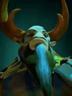
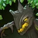

Nature's Call
Active ability: Activates on Full Mana
Call treants from random trees surrounding the chessboard to battle for Natures Prophet.
Level 1: Summons 1 Treant.
Level 2: Summons 2 Treants.
Level 3: Summons 2 Greater Treants.
| ★ | ★★ | ★★★ | |
|---|---|---|---|
| TREANT NUMBER | 1 | 2 | 2 |
| TREANT DURATION | 30 | 20 | 20 |
| Cooldown (s) | 7 | 10 | 10 |
| Mana cost | 100 | ||
Verodicia bestowed the Prophet with the ability to summon the Treant Guard, a mythical sentient army of the wild.
Stats
| ★ | ★★ | ★★★ | |
|---|---|---|---|
| Health | 500 | 1000 | 1900 |
| Mana | 100 | 100 | 100 |
| Armor | 4 | 4 | 4 |
| Magic resistance | 5% | 5% | 5% |
| Attack damage | 45–50 | 90–100 | 180–200 |
| Attack interval (s) | 1.4 | 1.4 | 1.4 |
| Attack range | 400 | 400 | 400 |
| Move speed | 500 | 500 | 500 |
 Elf · Evasion
Elf · Evasion
- (3) Your Elves gain +25% evasion.
- (6) Your Elves gain another +40% evasion, about 55% in total with the (3) bonus.
- (9) When an Elf dodges an attack, it turns invisible for 1s and summons an illusion of the attacker on your side for 7s. The illusion deals 50% damage and has no mana. 5s cooldown per Elf.
 Druid · Synergy
Druid · Synergy
When you make a ★★★ Druid, the remaining copies of that Druid are not removed from the shared pool.
- (2) Two identical Druid★ combine into a Druid★★. An Io★ plus one Druid★ also combine.
- (4) Two identical Druid★★ combine into a Druid★★★. An Io★★ plus one Druid★★ also combine.
- (6) Two identical Druid★★★ combine into the Altar of Spirits. It gets Altar Power stacks equal to the Druid★★★'s level (5-8) and removes all Druids from the shared pool. Each stack means 10% less damage taken and 10% more damage dealt, multiplying (8 stacks: 43% damage taken, 214% damage dealt). At battle start the Altar shares its stacks with nearby friendly Druids it tethers.